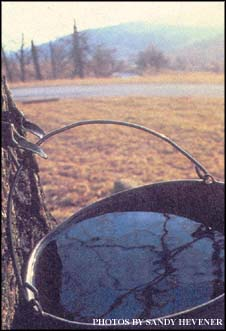
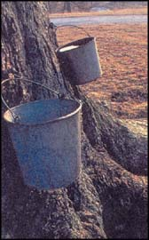
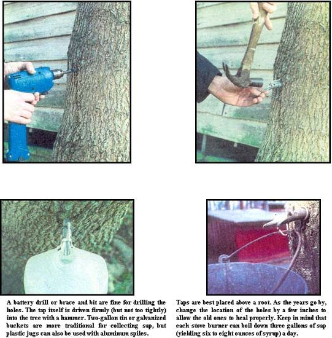
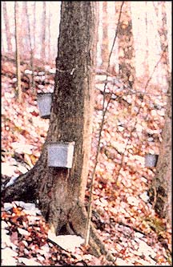
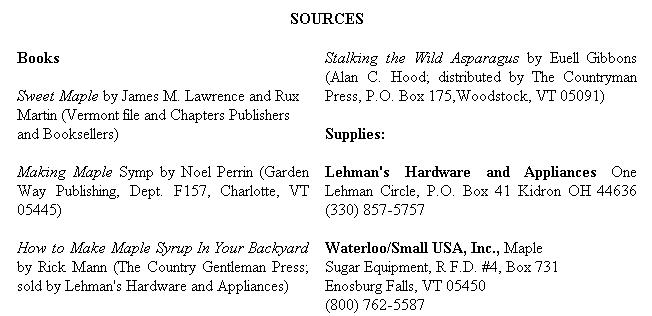

I was nearly brought to tears a couple days ago when a few friends told me that they had never had real maple syrup before. The thought of these fine people, innocently eating their breakfast accompanied only by high fructose, gelatinous, processed maple food flavoring was enough to knock my hat off. Old news, this, to those of you who share my maple hero worship, who use the stuff to add pizzazz to everything from pancakes to chili. If there's a finer substance on the planet, 1 haven't stumbled across it. The only thing that might take the starch out of the experience for you is plunking down ten bucks for a pint of the stuff. That's where Alan James Garbers comes to the rescue. Chances are, whether you live in Alabama or Gnome, there are trees a stone's throw from your home just waiting to be tapped this spring. But I'll let Alan take it from here.
-Matt Scanlon
Once a common springtime activity, harvesting the natural sweetness found right in our own backyards is a ritual that has all but died out. Making maple syrup doesn't require any special equipment, nor does it require a forest of trees. Just a few common household items and one maple tree is all that is needed to get started.
Any maple tree ten inches in diameter or larger can be tapped. Some folks go by the 40-year rule, meaning they won't tap a tree until it's at least that old. That's probably a good rule of thumb for hard maples, which can take a generation at reach tapping size. But soft maples grows much faster; I have one that is five years old and is almost big enough to tap now! The main concern is that the tree be large enough to recover from the taking of sap and able to heal the wound left by the tap. My advice is to measure the diameter and then tap accordingly.
Any variety of maple will do, but the native sugar maple has a higher sugar concentration than does the red maple, silver maple (soft maple) or box elder, and therefore less sap is needed to produce the same amount of syrup.
Large maples and those that get plen ty of sunshine without much competition will generally produce the most sap and often are called "sap cows." On a good day a sap cow can produce two gallons or more of sap. On the flip side, a smaller tree deep in the woods that gets low amounts of sunshine will produce maybe a quart to a gallon of sap a day, if that.
How does all of this sap translate into syrup? Here in Indiana it takes 50 gallons of sap to make a gallon of syrup. In Vermont, it takes closer to 40 gallons of sap to produce the same. Most anywhere maples grow, a really large tree with multiple taps can produce a gallon of syrup over a season, but in general figure on one quart of syrup per tap per season.
In pre-Columbian North America, much of the eastern part of the continent was a vast hardwood forest dominated by maple trees, giving the resourceful Native Americans a vast reservoir of sweetness. Compared to their relatively plain diet of wild game, nuts and berries, maple sugar and syrup were a gift from the creator himself.
After making huge slashes in the trunks of maple trees, Native Americans collected the sweet sap in small troughs or birch-bark pails. Without the benefit of iron cookware, the industrious natives produced large earthen boiling pots or else hollowed out large logs for boiling troughs. While the earthen pots could be heated directly on the fire, the wooden boiling troughs took extensive time and labor that required heating a large quantity of rocks, which were then dumped into the sap trough. The rocks would heat the sap to boiling, but constantly needed to be reheated themselves. Eventually, the sap was boiled down into sugar and eaten on the spot or stored for future consumption.
As Europeans settled the land, they followed the Native American example of making large gashes in the trees and gathering the sap in troughs. From there it was collected and boiled down in large kettles. Sadly, this method was quite harmful to the trees and many didn't survive.
Fortunately, better methods of tapping evolved over the years. Syrup producers eventually settled on the less harmful idea of drilling holes into the tree, pounding a spout into the hole and gathering the sap in buckets. Later, metal spouts (spiles) were produced and huge wood-fired boilers were designed especially for maple sap boiling. These boilers had a large fire-to-sap surface area along with channels and sections through which the sap traveled as it went from sugar water to syrup. Huge amounts of syrup could be made in a relatively short period of time compared to the old kettle method. This type of evaporator is still in use today.
As labor costs have climbed, many producers have turned to plastic line collection systems, which vacuum the sugar water from the trees and transport it to large collection points or directly to the sugarhouse to be boiled. Reverse-osmosis filtration systems are also being used; these reduce the amount of water that needs to be boiled off, thus cutting down on the time needed to make the finished product.
Tapping season can start as soon as New Year's Day and ran into April, depending on your location and weather. Cold nights (20°F or below) followed by warm days (50°F or above) awaken the trees and start the magic of sap flow. Tapping too soon will produce little or no sap and tap holes may dry or seal before the real flow starts. Most years you can plan on tapping your trees in the latter part of February through the first part of March (earlier in the South; see " Maple Syrup with a Southern Drawl "). Cold days, windy weather or continued warm nights can halt the sap temporarily, but the run will usually last until the weather stays consistently above freezing or the sap turns from clear to milky sometime in March or April.
Tapping can be done with a battery drill or a brace and bit. For a snug fit, use a drill bit slightly smaller than your taps. A 7/16 drill bit is best for factory-made taps. Drill the hole two to three inches deep at a slightly uphill slant so that the sap can drain out. One hole can be drilled in a tree that is ten inches in diameter. If the tree is over eighteen inches in diameter, two holes can be drilled. If possible, drill the holes above a large root to get a better flow. As the years go by, rotate your taps by a few inches to allow the old holes to heal.
Taps, which are also called spiles, are placed as the holes are drilled. Drive in each one with a hammer until it seals the hole and starts to emit sap. Don't hammer the spiles in too tightly; they can be tough to remove at the end of the season and you could damage them in the process.
Taps can be purchased through maple producer supply houses or they can be made by drilling out small round saplings. The late Fuell Gibbons told of using elderberry stems in his book, Stalking the Wild Asparagus (Alan C. Hood & Co., 1987). He would cut them in four-inch lengths and punch out the pith with an iron rod. After whittling a slight taper on one end, he would cut a notch for hanging the bucket on the other end.
Two-gallon tin or galvanized buckets are often used to catch the sap, but plastic gallon milk jugs work fine when using aluminum spites. One hole is made just above the jug handle for the spout of the tap; a second, smaller hole is made lower on the handle for the spile hook. Leave the caps on the jugs to help keep out bugs and debris, though some insects will find their way into the sweet sap no matter what you do. Just filter them out when you transfer the sap into the holding tank.
It is best to collect the sap daily. As the day warms. the sap will begin to flow and drip into the bucket. A drop a second is a good rate. Collecting the sap can be done at anytime, but afternoon is best since ice in the buckets can cause problems in the morning hours. Hand-carried, five-gallon buckets can be used for short trips, but plan on hauling a collecting tank on a wagon or sled for long trips.
The sap will have to be stored until you have time to boil it... and enough to make it worth your while. How much is enough? If you're using a pot on the stove, three gallons of sap is a lot to boil down in a night. If you build an evaporator like mine (see " Do-It-Yourself Evaporator "), three gallons isn't worth starting a fire for. I generally like to have ten gallons before I stoke the evap. If I don't have enough, I store it for a day or two until I get more. Knowing that each gallon of sap will yield about two ounces of syrup (three or four ounces in New England), you can figure out how much you'll want to have before you begin boiling. In the meantime, the collecting tank can double as a holding tank, or else plastic 55-gallon soft-drink syrup drums will work and can be bought from many soft-drink bottlers
Try to keep the stored sap cool, as it can become rancid after a day or so, same as any other perishable food item. I keep mine in a shady area and try to boil it down as soon as I can. I've also frozen sap until I've had time later to boil it down.
The bulk boiling process is nothing more than boiling off water and concentrating the sap into syrup. Find a large container like an old steam-table tray, kettle or four-quart pot. I have used woodstoves, gas grills and kitchen stoves to boil. Wood evaporators are the cheapest; kitchen stoves are the easiest to control. (If you're starting with only a couple of gallons of sap, it's best to do all of the boiling in a large pot on the kitchen stove, where the heat can be precisely manipulated.)
Initially the goal is a strong rolling boll. Keep an eye on the pan levels and make sure the sap doesn't boil over or burn. A pot on the store will boil off about a half gallon of water an hour, while a homemade evaporator can boil off ten gallons an hour.
When the bulk of the sap is boiled down, its time to start the finishing process. Finish boiling takes more care than bulk boiling and is best completed on the kitchen stove. (If you're already working with a large pot on the stove, you'll want to transfer your boiled-down syrup to a quart-size saucepan for finishing.) As the sugar concentration increases, the sap/syrup tends to foam up and boil over very quickly. A close watch should be kept on the pan and the heat decreased if necessary; there are few things messier than burnt sap As the syrup thickens toward completion, all that is needed is a simmer.
There are several ways to tell if the syrup is ready. One way is to keep dipping into the syrup with a spoon; when it "sheets" off the spoon in a thin layer, it's ready. Another way is to use a candy thermometer. Water boils at 212°F at sea level, but maple syrup boils at seven degrees hotter, or 219°F at sea level.
As the syrup boils, track its temperature. When the syrup reaches 219°F, or seven degrees above whatever the boiling point of water is at your elevation, it's finished.
The most accurate way of checking readiness is to use a hydrometer (a device for measuring the specific gravity of a liquid). When a hydrometer placed in a sample of syrup floats at a predetermined point, you know it's done.
The next step is to strain the syrup of impurities and sugar sand, leaving a pure, clear, amber liquid. As the syrup is nearing completion, set up a filtering system as follows: Place a clean, lint-free towel or cotton sheet in a colander, then sit the colander in a large bowl. When the syrup is at temperature, pour it through the sheet. It helps if the filter and colander are heated with a hair dryer or by some other means to keep the syrup hot and thin.
I generally like to have ten gallons before I stoke the evaporator. Stove-top boiling is better for small amounts. Keep in mind that each gallon of sap will yield about two ounces of syrup.
Cool syrup will not flow through the dense fiber of the filter.
Maple syrup is all natural and will spoil if it's not preserved by freezing or canning. Pint jars or smaller are best. As the sap is boiling, clean and sanitize enough jars to hold all of the syrup being made. As soon as the filtering is done, pour the syrup into the jars and seal. As the jars cool, the lids should pull in by way of vacuum pressure. If the jars do not seal by the time they are cool, they'll need to be reheated and resealed. The syrup is now done and ready to eat. Sealed jars will keep for years. Any open containers of syrup must be refrigerated to prevent spoiling.
If you like, once the syrup is done, you can turn some of your sweet ambrosia into maple sugar candy. All that's required is boiling away more water. Slowly and carefully boil a quart or more of syrup in a four-quart pan until the temperature reaches 235°F to 245°F, stirring to keep it from boiling over. Once it reaches temperature, remove the pan from the heat and let it cool, without stirring or disturbing until the temperature drops to 175°F. Then, stir until the syrup starts to lighten and become thick and creamy. Spoon portions onto a cookie sheet or into molds and continue to cool. The sugar will burden quickly so don't dawdle!
The lumps of sugar will store well in a dry location or in a freezer ... provided the family sweet tooth doesn't get to it first.
The tapping season ends when the sap turns bitter or yellow, the weather turns warm and the sap stops running, or you get too tired to carry another sap bucket. Be sure to pull all the taps right away to let the trees heal. A gentle nudge with a claw hammer is all that is needed to remove raps in most cases. Finally, before putting all of the buckets and pans away, wash everything well, or else mold will grow in the sweet sap left behind.
When just starting out, you'll most likely consume more syrup than you can produce. As experience and equipment grows, so will the amount of syrup. Still, once word gets out among family friends and neighbors, demand will always exceed supply and it won't be long before your wallet tastes the sweetness Who knows - it might just become the family business!
|
 SANDY HEVESER |
|
 |
|
 |
 |
 |